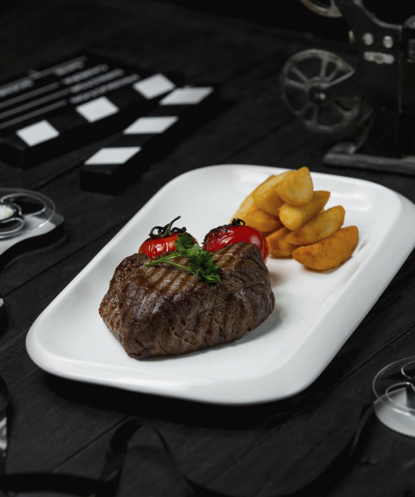

Steak and Potatoes

Decription
Ingredients
- steak
- potatoes
- salt
- pepper
- oil or butter
Steps
- In a medium bowl, combine the steak pieces with seasoning and oil. Cover and set aside, allow to marinate while you get potatoes ready.
- In a large skillet over medium high heat, heat oil and butter. Once butter melts add the potatoes. Season with salt/pepper and chili flakes. Toss well and let the potatoes sear on both sides nice and golden brown. You can turn heat down cover and cook till fork tender. If you see that potatoes are getting too crispy but not tender, add few tablespoons of water to the pan cover and allow to get tender. This can take about 8-10 minutes. Transfer potatoes to a plate, keep warm.
- In same skillet over medium high heat add oil and butter. Once butter is melted add garlic. Give the garlic about 5-10 seconds, lay the steak pieces down in one layer. Sear for 1-2 minutes on each side. Adjust the time depending on how well you like your steak. Add the potatoes back in the pan. Garnish with some chopped parsley and rosemary. Serve right from the pan.
Home
My Recipes
Mushroom Noodles with White Whine Sauce
Garlic Butter Steak and Potatoe Skillet
Bacon Pancakes